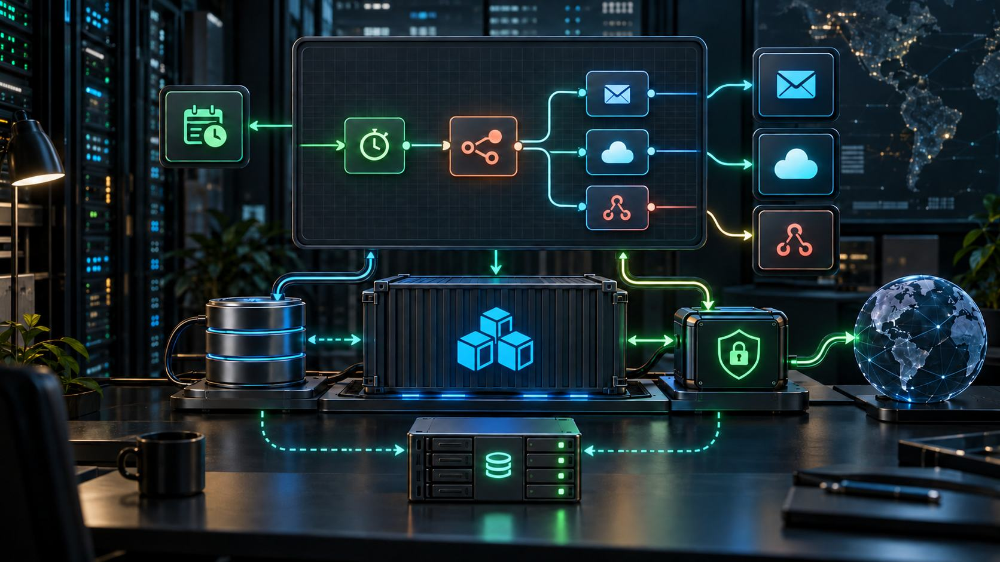

How to Install n8n with Docker Compose, PostgreSQL, and HTTPS
n8n connects APIs, webhooks, schedules, and applications into automated workflows. Self-hosting gives control over data and infrastructure, but it also makes you responsible for secrets, backups, HTTPS, upgrades, and recovery.
This guide deploys one n8n instance with Docker Compose, PostgreSQL, and an Nginx reverse proxy. It suits a small team or moderate workload; multi-worker queue mode requires Redis and a separate architecture.
Target architecture
- Nginx terminates HTTPS at
automation.example.com. - n8n binds port 5678 to localhost only.
- PostgreSQL stays on an internal network without a public port.
- The database and
/home/node/.n8nuse persistent volumes. - Secrets live in a restricted environment file outside Git.
A database backup without N8N_ENCRYPTION_KEY may leave encrypted credentials unusable. Protect that key as one of the system's most important assets.
1. Prepare the server and DNS
Use an updated Linux host with Docker Engine and the Compose plugin. Point automation.example.com at the server. Permit only administrative SSH, HTTP, and HTTPS through the firewall; never expose 5432 or 5678 publicly.
docker --version
docker compose version
df -h
free -hSeparate development and production when workflows send real email, create invoices, or delete data. Do not test unfamiliar nodes directly in production.
2. Create the project directories
sudo mkdir -p /opt/n8n
sudo chown "$USER":"$USER" /opt/n8n
cd /opt/n8n
mkdir -p n8n_data postgres_data backupsKeep backups outside the web root. For bind mounts, verify container UID/GID and write permissions; named volumes may be easier in some environments.
3. Create secrets and the environment file
openssl rand -base64 36
openssl rand -hex 32Create .env:
N8N_VERSION=2.5.5
POSTGRES_PASSWORD=replace-with-a-long-random-password
N8N_ENCRYPTION_KEY=replace-with-a-stable-random-key
N8N_DOMAIN=automation.example.com
GENERIC_TIMEZONE=Asia/Ho_Chi_Minhchmod 600 .envThe version is an example pin. Select a supported release, read its notes, and test before upgrading. Avoid latest in production because a pull can introduce uncontrolled breaking changes.
4. Create the Docker Compose file
services:
postgres:
image: postgres:17-alpine
restart: unless-stopped
environment:
POSTGRES_DB: n8n
POSTGRES_USER: n8n
POSTGRES_PASSWORD: ${POSTGRES_PASSWORD}
volumes:
- ./postgres_data:/var/lib/postgresql/data
healthcheck:
test: ["CMD-SHELL", "pg_isready -U n8n -d n8n"]
interval: 10s
timeout: 5s
retries: 10
networks: [backend]
n8n:
image: docker.n8n.io/n8nio/n8n:${N8N_VERSION}
restart: unless-stopped
depends_on:
postgres:
condition: service_healthy
ports:
- "127.0.0.1:5678:5678"
environment:
DB_TYPE: postgresdb
DB_POSTGRESDB_HOST: postgres
DB_POSTGRESDB_PORT: 5432
DB_POSTGRESDB_DATABASE: n8n
DB_POSTGRESDB_USER: n8n
DB_POSTGRESDB_PASSWORD: ${POSTGRES_PASSWORD}
N8N_ENCRYPTION_KEY: ${N8N_ENCRYPTION_KEY}
N8N_HOST: ${N8N_DOMAIN}
N8N_PORT: 5678
N8N_PROTOCOL: https
N8N_PROXY_HOPS: 1
WEBHOOK_URL: https://${N8N_DOMAIN}/
N8N_EDITOR_BASE_URL: https://${N8N_DOMAIN}/
GENERIC_TIMEZONE: ${GENERIC_TIMEZONE}
TZ: ${GENERIC_TIMEZONE}
EXECUTIONS_DATA_PRUNE: "true"
EXECUTIONS_DATA_MAX_AGE: 336
volumes:
- ./n8n_data:/home/node/.n8n
networks: [backend]
networks:
backend:PostgreSQL has no public ports mapping. n8n binds localhost so Nginx is the only public entrance. WEBHOOK_URL controls callback URLs presented to webhook and OAuth providers.
Tune execution retention to investigation and compliance requirements. Excess retention grows the database and may preserve sensitive payloads.
5. Start and inspect the containers
docker compose config
docker compose pull
docker compose up -d
docker compose ps
docker compose logs --tail=100 n8nResolved Compose output may expose secrets; never paste it into public tickets. Test locally with curl -I http://127.0.0.1:5678. If startup fails, inspect database health, credentials, directory permissions, and logs. Do not delete volumes without a backup.
6. Configure Nginx reverse proxy
server {
listen 80;
server_name automation.example.com;
location / {
proxy_pass http://127.0.0.1:5678;
proxy_http_version 1.1;
proxy_set_header Host $host;
proxy_set_header X-Real-IP $remote_addr;
proxy_set_header X-Forwarded-For $proxy_add_x_forwarded_for;
proxy_set_header X-Forwarded-Proto $scheme;
proxy_set_header Upgrade $http_upgrade;
proxy_set_header Connection "upgrade";
proxy_read_timeout 300;
proxy_send_timeout 300;
}
}sudo nginx -t
sudo systemctl reload nginxIssue a TLS certificate with Certbot or the provider's tooling, enable HTTP-to-HTTPS redirect, and use the real domain. Long editor and execution connections require correct WebSocket headers and proxy timeouts.
When another CDN or load balancer sits before Nginx, set N8N_PROXY_HOPS to the exact number of trusted proxies. Incorrect trust can produce wrong scheme/IP detection or accept spoofed headers.
7. Create the owner and protect the editor
Create the owner with a unique strong password and enable two-factor authentication when supported. Avoid shared owner accounts; grant role-based access and revoke it promptly during offboarding.
The editor holds credentials for databases, email, cloud, and APIs. Restrict it with a VPN, identity-aware proxy, or IP allowlist when only internal staff need access. Public webhooks may require separate path or ingress policy.
8. Test a webhook end to end
- Create a workflow with Webhook and Respond to Webhook nodes.
- Use the Test URL while the editor is listening.
- Activate the workflow and switch to the Production URL.
- Send a request from an external machine.
- Inspect the execution, response code, and body.
curl -X POST https://automation.example.com/webhook/health-test \
-H 'Content-Type: application/json' \
-d '{"source":"external-check"}'Protect webhooks with secret headers, HMAC signatures, OAuth, or node-supported authentication. An obscure URL is not authentication. Add idempotency or deduplication when provider retries could repeat side effects.
9. Manage credentials and the encryption key
n8n encrypts credentials using its encryption key. Keep it stable through restarts, migrations, and restores. An arbitrary replacement can make existing credentials unreadable.
- Do not commit the key in Compose.
- Keep a protected copy in a password or secret manager.
- Do not export workflows with credentials or share secret screenshots.
- Create least-privilege, rotatable integration credentials.
- Prefer service accounts over personal accounts.
10. Control execution and binary data
Large files can fill disk quickly. Limit input size, define execution retention, and monitor volumes. Do not retain binary or sensitive payloads longer than necessary.
Avoid placing secrets in ordinary node data because execution logs may save inputs and outputs. Use credential and secret mechanisms. For high volume or large binaries, evaluate external-storage capabilities available to the installed edition and version.
11. Back up three critical components
- PostgreSQL workflows, executions, and metadata.
- The
n8n_datainstance directory. N8N_ENCRYPTION_KEYand deployment configuration.
cd /opt/n8n
docker compose exec -T postgres \
pg_dump -U n8n -d n8n -Fc \
> backups/n8n-$(date +%F).dump
tar -czf backups/n8n-data-$(date +%F).tar.gz n8n_dataCopy backups off-host, encrypt them, enforce retention, and test restoration. Files on the same VPS do not protect against disk loss or compromise.
12. Update safely
- Read release notes and breaking changes.
- Back up database, data directory, and encryption key.
- Test critical workflows on staging.
- Change
N8N_VERSIONto the approved release. - Pull and recreate in a change window.
- Verify login, webhooks, schedules, credentials, and executions.
docker compose pull
docker compose up -d
docker compose logs --tail=200 n8nDatabase migrations can make image rollback nontrivial. Verify downgrade guidance, preserve a pre-migration backup, and avoid uncontrolled automatic production upgrades.
13. Monitor and alert
- Container restarts, health, and error logs.
- CPU, RAM, disk, inode, and volume growth.
- PostgreSQL connections, size, slow queries, and backup age.
- Workflow failure rate, duration, and waiting executions.
- Webhook latency, 4xx/5xx, and certificate expiry.
- Missed schedules and expired integration credentials.
Use an external monitor against a harmless health/webhook endpoint. Send alarms through a channel that does not depend entirely on n8n itself.
14. Additional hardening
- Install only reviewed community nodes.
- Restrict Code, Execute Command, and risky nodes.
- Block unnecessary outbound access to metadata and internal services.
- Run the n8n security audit periodically.
- Update the host, Docker, images, and dependencies on a schedule.
- Separate development and production credentials.
- Apply least privilege to PostgreSQL and every integration.
Production checklist
- Pin and stage-test the image version.
- Keep PostgreSQL and 5678 private; expose the editor only through HTTPS.
- Set correct webhook URL, timezone, and proxy hops.
- Keep a stable encryption key outside Git and back it up.
- Control owner access, 2FA, and user roles.
- Authenticate, validate, and deduplicate webhooks.
- Set execution/binary retention and monitor disk.
- Test restoration of database, data, and secrets.
- Maintain external monitoring and a rollback runbook.
Conclusion
Production self-hosting does not end with docker compose up. A reliable n8n deployment needs a persistent database, protected encryption key, correct webhook URL, HTTPS reverse proxy, least-privilege credentials, and tested backups. Treat the automation platform as a production service so its workflows can be trusted.